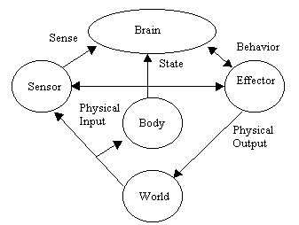
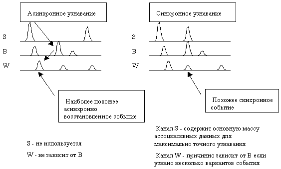

В моей модели оценка даётся не за поведение, а за результат. Поэтому она всегда выдаётся через некоторое время после исполнения правильного поведения.
Рабочий дневник 1998a
02.01.98 Сенсоры и эффекторы кибер-бабочки
В прямоугольном окне живут цветок и бабочка. Цветок иногда прыгает с места на место для того, чтобы у бабочки накапливался жизненный опыт. Бабочка имеет два сенсора, эффектор и мозг. Один сенсор чувствует касание цветка (1 бит) и является источником данных для канала Wish. Второй сенсор исполняет роль зрения. Он видит, в каком квадранте относительно бабочки находится цветок (2 бита). Эффектор управляет движением в одном из четырёх направлений (2 бита). Мозг состоит из одного нейрона с 3 битами на входе и 2 битами на выходе. Бабочка работает прилично. Эту демонстрационную программу я положил на свою веб страничку. Поскольку цветок прыгает случайно, без логических связей с текущей ситуацией, то у бабочки накапливается также "опыт неуверенности".
Запаздывание оценки . В моей модели оценка даётся не за поведение, а за результат. Поэтому она всегда выдаётся через некоторое время после исполнения правильного поведения. Но запаздывание не должно быть слишком большим . Если пропускается несколько результатов, то может получиться, что хорошая оценка будет ассоциирована с только что достигнутым плохим результатом и наоборот. В этом случае обучение невозможно. Лучше вообще не давать оценку, чем давать её неверно . Раз уж оценка запаздывает, то последнее похожее поведение может быть не оценено. Кроме того, оценка будущего Q на входе в протокол всегда статистически менее точная. Поэтому в качестве интервала для расчёта Q надо брать интервал больший, чем от последнего похожего события до входа в протокол. Например, подходит предпоследнее событие.
О входе в протокол. Пока я слежу за десятком событий, размещённых где-то в середине протокола, на входе в протокол может появиться новое более похожее событие. Поэтому надо осматривать вход на каждом ходе. За одно это полезно для поиска среднего веса, с которым сравниваются активные события.
Оптимизация выбора поведения . Допустим, бабочка нашла, что лучшее поведение было на шаге N. Она повторяет это на ходе N1, но не получает хорошую оценку. Тогда в следующий раз она найдёт, что ходы N и N1 похожи и только один из них N лучший. И она снова делает неудачный ход N. Так что надо делать лучший ход, если он проверен много раз: 1 из 1, 3 из 4 и т.п. А иначе - подбирать новый ход.
Пусть найдено N похожих событий. Из них в M точках Q максимально. Какое выбрать поведение? Это рассуждение надо провести для непрерывных данных, для которых нет ничего одинакового. Тогда найдено N наиболее похожих событий. Из них в M точках прогноз будущего Q близок к максимальному прогнозу. Всё это в пределах, допустим, 1/2 sigma, или 1/10 от диапазона. Допустим, q точек из M имеют поведение B1, а p точек имеют поведение B2. Тогда можно выбрать B1 с вероятностью q/(M+1), B2 с вероятностью p/(M+1), и новое случайное поведение с вероятностью 1/(M+1). Можно найти прогноз и поведение во всех N точках, и выбрать поведение так, чтобы лучшее будущее имело больший вес. Например, худшая точка имеет вес 0, а лучшая - 1. Или, вес пропорционален Q. Если похожая точка всего одна, то мы вынуждены её повторить. Тогда в следующий раз она будет не одна. При этом всегда есть место случайному ходу и зацикливание невозможно. Но возможно глупое поведение.
Слежение за событием и выбор поведения - это два разных процесса. При слежении за событием нужно, чтобы похожих событий было достаточно много. Если останется только один образец, то надо начинать сравнение со всеми данными вновь.
При выборе поведения важно не потерять удачный опыт и не зациклиться, даже если внешние условия зациклены. Кроме того, важно не отвлекаться на малозначащие, но хорошо когерентные события. Например, для жизни бабочки совершенно не важно, что Фобос строго периодически вращается вокруг Марса. Даже если бы эти сведения поступали к бабочке по 999 каналам. Но мозг должен уметь и разделить важность. Например, для управления сердцем важно наблюдать за его периодичностью, но она совершенно не нужна для поиска цветка. Поэтому "вес" - атрибут нейрона, а не канала . Для разных нейронов один и тот же канал может иметь разную важность. (Очень) важно также сохранение синхронизации (ассоциаций). Чтобы посторонние когерентные события не отвлекали внимание надо определять коэффициент корреляции информационного канала с каналом Wish. Если они не коррелируют, то вклад такого канала в общий вес надо уменьшать. Конечно, расчёт корреляционной функции делать не надо. Надо набирать статистику корреляций: вес обоих каналов совпал - коэффициент возрастает, не совпал - убывает.
А если нет канала Wish? Если надо просто делать точный прогноз? Все усовершенствования алгоритма не должны ухудшать возможность "объективного" прогноза.
Проблема рационализации поведения . Пусть мы имеем 100 похожих точек и, соответственно 100 образцов удачного поведения, но все они различаются деталями. Можно выбрать "самое лучшее" из них. Но можно попробовать проанализировать все образцы, найти, что общее в них привело к успеху, и выбрать "рационализированное" поведение. Например, бабочка 100 раз подлетала к цветку по разным зигзагообразным траекториям. Наверняка, можно выявить в них наиболее повторяющиеся ходы и использовать в первую очередь их. На самом деле, то же самое происходит и при выборе одного из 100 ходов. На самом деле мы не анализируем траекторию, а именно выбираем только один ход.
Рационализация в виде сглаживания хорошо получается, если эффектор возвращает нейрону (каналу B) своё истинное текущее состояние. Эффектор может иметь физическую инерционность любой природы. Эта инерционность и будет рационализировать "блуждающий" характер угадываемого поведения. Если даже такой обратной связи нет, то сглаживание поведения всё равно со временем произойдёт, так как наблюдаемое системой своё собственное поведение более плавно, чем было бы при немедленном исполнении команд. Эта плавность лучше ассоциируется с "плавными" командами, и они, в конечном счете, статистически выживают. Например, в природе такое сглаживание происходит благодаря инерции движения.
Философия сложности вычислений . Если для расчётов приходится применять двойные суммы по парам каналов или тройные суммы и т.п., значит, каналы недостаточно независимы, и где-то сделаны ошибки в информационной структуре.
Перенос функции слежения за событиями из нейрона в канал . Если какой-то канал не узнаёт событие, значит, его вес мал, и не внесёт вклада в общий вес, вычисляемый нейроном. Следовательно, можно разрешить каналам следить за событиями. Нейрон (мозг) может лишь отбирать нужные ему события по результатам голосования каналов. Функция ослабления веса незначащих событий путём определения корреляции с каналом Wish, тоже может оставаться в канале. Нейрон о ней ничего не знает! Дело не в том, что некоторое событие хорошо или плохо опознаётся, а в том, что оно не влияет на Wish.
12.01.98
Ведущие каналы . По результатам голосования можно найти наиболее влиятельные каналы. Они будут голосовать друг за друга. Или, влиятельные с точки зрения Wish. По корреляции с Wish можно найти самые важные каналы. Их надо опрашивать в первую очередь в случае спешки.
Корреляция с Wish . Пусть канал Wish имеет права супервизора и определяет вклад других каналов в Q. Начальный вес всех каналов равен 0. Если в точке, где Wish узнаёт событие, другой канал тоже его узнаёт, то его вес повышается, а если не узнаёт, то его вес снижается. Тогда первый и наиболее весомый канал - это Wish. Остальные должны доказать свои права. Логично предсказывать будущее Q только в те моменты времени, когда протокол Wish узнаёт текущее состояние Wish. События не узнанные каналом Wish как бы не могут быть оценены вообще. Поэтому имеет смысл хранить и рассматривать только те события, которые узнаны каналом Wish, а также другими весомыми каналами, но последнее не обязательно. Должен ли Wish оценивать сам себя? Надо придумать такую формулу уточнения веса, чтобы для себя Wish получал вес 1, а для всегда некоррелированных событий - 0.
Если оценку делать только в момент Wish=0, то это значит, что оцениваемое событие в момент выдачи оценки не завершено и узнаётся. То есть система в этот момент находится в ожидании хорошей оценки. Те каналы, которые ожидают оценку, могут её получить. Те, которые не ожидают (не узнают текущее удачное событие), не получат.
Смысл узнавания Wish. В простейшем случае канал Wish содержит все 1 и немного 0. Поэтому после сброса он узнаёт всё. Активные точки выпадают по мере обнаружения в протоколе редких точек Wish=0. А при получении оценки Wish=0 выпадают сразу почти все точки списка. Если бы Wish имел много значений, то привязка к узнаванию в канале Wish имела бы больше смысла. Итак, сравнение только в моменты узнавания каналом Wish не сильно ограничивает общность, пока реальная оценка не получена. Но тогда такое всеобъемлющее узнавание может не спасти от посторонних когерентных событий.
Исключение канала, связи Wish с которым по объективным причинам ослабели, происходит само собой.
Как исключить событие из LM (long term memory)? Как взвешивать события в LM? При оценивании весов каналов эти веса относятся ко всем образам в канале (ко всему протоколу). Если так же взвешивать и память данного канала, то будут исключены все образы сразу. А это может быть неверно. Как взвешивать образы, а не весь канал? Чтобы вес был распределён вдоль канала. Это подошло бы и к живому протоколу. Например, можно при совпадении узнаваемых образов с каналом Wish увеличивать индивидуальный вес этого образа (момента времени в прошлом) в данной точке протокола. При несовпадении - уменьшаем вес. Асимптотика весов должна получаться такой, чтобы алгоритм позволял максимизировать Q.
Если при оценке вклада канала (или образа) учитывать только совпадения с Wish, а несовпадения не учитывать, то вес станет симметричным Kij=Kji, как со стороны канала, так и со стороны Wish. Если начальное значение K=0, то веса в протоколе будут достаточно динамичны, и начало протокола будет менее весомо.
Алгоритм голосования . Нейрон узнаёт у канала номера и веса похожих образов, и добавляет эти веса в ячейки с соответствующими номерами. Одновременно нейрон следит за 10 лучшими весами по отдельному списку.
Проблема сброса списка. Если вести одновременно два списка активных событий со сдвигом фазы, то можно обеспечить, чтобы всегда количество узнаваемых образов было больше 1. Например, когда число образов в списке Е1 стало равно 2 переходим к списку Е2, а список Е1 сбрасываем, и наоборот. Кстати, этот алгоритм, как и алгоритм постоянного взвешивания, может упускать короткие события.
Таким путём можно не допускать и слишком большого числа узнаваемых событий в канале Wish, чтобы не отвлекать внимание на посторонние когерентные события.
Синхронность протоколов и LM имеет принципиальное значение. Но это же и плохо. Так как невозможна асинхронная работа нейронов в одном органе с одним каналом Wish. Если попробовать обеспечить только локальную синхронизацию, а на больших интервалах пусть связь будет только ассоциативной. Это возможно только если есть разрывы причинности. Каждый канал находит похожие события. Все похожие события в одном канале это варианты ранее наблюдавшегося текущего события. Все события во всех каналах образуют всевозможные сочетания событий в каналах, образующих вместе общее многоканальное событие. То есть привязка по времени начинается с момента узнавания, а похожесть определяется ассоциативно. Были эти события ранее одновременными или нет, не имеет значения. Это верно, но невозможно предсказание Q!? Главное, что нет логической связи (синхронной связи в прошлом) между поведением и прогнозом будущего.
Можно постепенно ослаблять требование к синхронизации вглубь протокола, вплоть до полной потери синхронизации в LM. Но тогда в LM не будет ассоциаций между каналами! (Так и есть в природе.) Behavior зависит только от локально-предыдущего Behavior. Wish зависит от предыдущего Wish. А зависимость между каналами определяется только тем, что их общий причинный источник - внешний мир. На самом деле можно использовать "асинхронные ассоциации", но это не так надёжно.

Точно такая схема должна быть и у нейрона. В этом случае на месте мозга находится нейрон. Сенсор и эффектор тоже могут быть заменены нейроном. Физический вход будет относиться только к телу. А у сенсора и эффектора должны быть просто входы "input". Поведение в выходном канале нейрона должно для общности корректироваться как сенсором, так и нейроном. Эта общность состоит только в том, что нейрон физически может, но не имеет права корректировать чужие каналы.
Задача мозга - оптимизировать State, вырабатывая Behavior. В этом и заключатся "желание" мозга Wish.
Причинные гипотезы о работе мозга.
- 1 Если поведение B(t) ведёт к лучшему состоянию W(t), то такое поведение и в будущем будет полезно.
- 2 Состояние W(to) зависит от B(t), t<to.
- 3 Невозможно установить, что некое W(t) является самым лучшим, или самым худшим. Но можно установить, что W1(t) на некотором интервале t'-t'' лучше, чем W2(t). Это можно сделать разными способами.
- 3.1 Среднее W - лучше
- 3.2 W лучшее - лучше
- 3.3 W худшее - лучше
- 3.4 W приемлемое - достигается быстрее
- 4 Невозможно установить, что некое поведение B(t) нельзя улучшить.
- 5 Зависимость W от B определяется статистически, причинно и ассоциировано с другими событиями S(t).
- 6 Полезно, если приёмник поведения B может корректировать (рационализировать) B. Например, при выходе B за пределы допустимых значений. Или для возвращения информации о своём истинном состоянии. Если канал является выходом одного нейрона, и подключен не к эффектору, а к другому нейрону, то у такого "поведения" нет приёмника.
16 января 1998

При асинхронном выборе ищем максимальный уровень узнавания в разных каналах, и считаем, что Wmax есть следствие Smax и Bmax. Асинхронная работа (небольшого числа) каналов невозможна , так как при этом нет ни временных, ни ассоциативных связей.
Для чего нужна синхронность?
- Для выбора события по совокупности одновременно проявляющихся признаков.
- Для определения зависимости "уверенности в будущем" Q от поведения B.
- Для определения влияния разных каналов на Wish с целью уточнения весов каналов.
При асинхронном узнавании всё же есть вероятность того, что узнаваемое событие фактически происходило синхронно, так как само узнавание происходит одновременно. Чем больше каналов синхронно узнают событие, тем более вероятно, что оно и ранее было синхронным.
Живой мозг не имеет средств физической синхронизации . Все нейроны живут асинхронно. Физическая синхронизация действует только внутри нейрона, и в очень примитивной форме. Нейрон принимает тысячи сигналов, и они все вливаются в одну общую короткую память в виде какого-то биохимического маркера. Если в течение жизни такого протокола произойдёт похожее событие, то появится ещё такой же маркер. Повышение "концентрации" маркера определённого типа говорит об узнавании определённого события. Вот и вся внутри-нейронная синхронизация.
Вообще-то "ритмы" мозга вполне годятся для синхронизации если привязать "такты" работы нейронов к определённым меткам вдоль цикла ритма.
Возможно, физическая межнейронная синхронизация дополняется в живом мозгу логической ассоциацией. Нейроны заводят десятки тысяч многократно дублированных каналов связи друг с другом. Допустим, один нейрон узнаёт событие потому, что по 3000 каналов из 10000 приходит "похожий" образ. В это время другой нейрон узнаёт событие потому, что по 2000 каналов из 3000 приходит знакомый ему образ. Фокус состоит в том, что из этих 3000 и 2000 каналов 1700 - это одни и те же общие для обоих нейронов каналы. Поэтому очень велика вероятность того, что оба нейрона вспомнили одно и то же событие, которое происходило синхронно по всем рассматриваемым каналам в прошлом. Итак, межнейронная (или межканальная) память живого мозга всегда ассоциативная. Но благодаря многократному дублированию каналов она очень часто выдаёт такой же результат, как если бы она была синхронной.
Мы не обязаны копировать живой мозг, и можем применять синхронную память. Поэтому количество нейронов, видимо, можно уменьшить в тысячи или миллионы раз без потери эффективности мозга. Ассоциативную память или ассоциативные свойства памяти конечно тоже можно использовать, но не потому, что нет другого выхода, а там, где это выгодно.
Резюме. Есть смысл сделать всю память во всей нервной системе, (как в центральном мозге, так и в органах), синхронной. При этом не потребуется даже дублирование выходных каналов одного органа на входе другого органа. Сигналы Wish разной природы могут обслуживать разные группы нейронов, тесно объединённые в одну сеть. И это логически выгоднее, чем разделение на органы. Для экономии длительной памяти надо делать акты запоминания не для всех каналов сразу, а только для тех, которые получили приказ на запоминание от связанных с ними нейронов. При расчёте весов и поиске похожих событий каналы не обращают внимания на маркер момента запоминания. А нейроны, при суммировании весов, оценивают суммы отдельно для каждого маркера. Поиск поведения и влияния B на Wish тоже проводится с учётом маркера запоминания. Если существенность (вклад) каналов хорошо определён, то в каждом акте запоминания может участвовать очень небольшая доля каналов.
Вопросы.
- Как получается обобщение?
- Как события превращаются в образы, образы в понятия, текущие события и знания в целенаправленное поведение, цель в команды?
- Каковы механизмы мысленного "проигрывания" предстоящего события, долгосрочного планирования, удержания и постепенного исполнения долгосрочной цели?
- Как работают механизмы, вырабатывающие поведение, растянутое вне краткосрочной памяти?
Только одно я сейчас знаю в подробностях: как команды превращаются в поведение. А раньше это была самая неразрешимая задача. Может быть, дело просто в том, что нет чёткой границы между короткой и длительной памятью. Происходит постепенный переход от оперативного (синхронно-точного) протокола к долгосрочной (фрагментарно-ассоциативной) памяти.
Осознавание (себя) - это "обдумывание ". Мозг действует более оперативно, чем тело. Чтобы выработать команду "бежать" нужно 0.01 сек, а чтобы бежать, нужны минуты. Ещё до детализации и исполнения команды "бежать" эффекторными нейронами, она попадает на входы тысяч других нейронов, которые ассоциативно "вырабатывают" следующие после "бега" действия. Так происходит продумывание (может быть на бессознательном уровне) предстоящего действия и его последствий.
Осознавание - это способность одновременно с действием обдумывать другое действие.
Продумывание на сознательном уровне обычно связывается с языком. Это буквально речь без звуков, проговаривание в уме. Язык ещё хорош тем, что он содержит короткие штампы (слова) для обозначения длительных событий. Благодаря этому возможно длительное планирование, обдумывание продолжительных действий за короткий срок. Если бы система могла сама естественным образом вырабатывать такие штампы на уровне каждого эффектора , то продумывание было бы возможным тоже на уровне каждого эффектора. Это более мощный думающий механизм, чем у человека.
Уровень обобщения в этих штампах не должен иметь ограничений. Тогда возможно планирование (проигрывание) на любой интервал времени.
Это можно также интерпретировать, как удержание внимания на обдумываемом, например, предстоящем процессе в целом. Между тем, до начала исполнения команды "бежать", она может быть отменена. Постоянное применение такого механизма приводит к привычному сознательному "продумыванию" прошедших или последующих событий без прямой цели их исполнения. Это закрепляется, так как полезно. Может ли такой механизм работать на одном нейроне, имеющем непосредственный эффекторный выход? Да, но упрощённо. При этом "продумывание" сведётся к исполнению "продумываемых" вариантов в реальном мире. Это производит впечатление нерационального поведения. Если эффекторы не успевают исполнять команды в темпе управления, то часть такого "физического" обдумывания может быть не видна по поведению. Она будет усреднена или не воспринята инерционным исполнительным механизмом. Похожее усреднение происходит и при большом количестве нейронов.
Если эффекторы не могут выполнить команду, так как она вышла за диапазон допустимых значений, то они могут откорректировать эту команду.
Итак, обратная связь канала B с исполнителем рационализирует поведение, то есть усредняет его, вводит в "разумные" рамки, по тем логическим и физическим правилам, которые специфичны для данного эффектора. Такого механизма нет в живом мозге. Но и в живом мозге постепенно возникает рационализация поведения, так как возникает ассоциация между "рационализированным" исполнением команды и достигнутым положительным результатом. Само суетливое поведение (источник рационального исполнения) не вызывает прочных ассоциаций, так как плохо повторяется.
Может ли быть стимулом собственное состояние мозга ? Допустим, нейрон получает оценку за точность предсказания входящих событий (но не за предсказание своего поведения!). Он вырабатывает своё поведение так, чтобы повысить эту точность. К чему это приведёт? К эпилепсии (короткому зацикливанию, приводящему к немедленному ощущению действий эффекторов). К избеганию всего нового (машина забьётся в тёмный угол и легко будет предсказывать свои ощущения). Желание Wish не может основываться на состоянии мозга. Это болезненный порочный круг. Может поэтому живой мозг не имеет чувствительных нервов.
Нейрон может содержать канал B, который никто не использует. К чему это приведёт? Изменяя данные в этом канале, нейрон не может существенно повлиять на Wish. Может, но очень слабо, если будет, например, дублировать один из своих каналов. Но, поскольку веса каналов со временем уточняются, это дублирование будет само собой устранено. Постепенно в этом канале образуется ничего не значащий шум. Никакой пользы от этого нет. Вреда тоже нет. Продумыванию это не помогает.
23 января 1998
Пропуск событий в методе активных точек . (Этот метод описан в протоколе отладки алгоритма.) Если некоторые точки активны, то есть, узнаваемы лучше среднего, то они удерживают внимание. Если в это же время появляется новая активная точка, то она остаётся вне списка, и не может быть обнаружена.
- Можно отбирать события более строго, например, по максимальному весу. Тогда сброс списка будет происходить чаще, и потери коротких событий будут менее вероятны.
- Можно никогда не доводить дело до сброса списка. Постоянно случайно проверяем некоторые новые точки и добавляем их в список. А старые точки тем временем исчезают. Количество проверяемых точек может быть динамическим. Если в списке больше 10 точек, то опрашиваем меньше новых, если меньше 10, то больше новых.
- Если нашлось действительно важное и уникальное событие, то текущий список сам собой быстро обновится. Трудность только в том, что это событие будет узнано не с самого начала. Такова, похоже, судьба всех событий. Но, зная это, можно ли учесть пропущенные ходы? Наверно нет.
- Если за событиями следит каждый канал, то появление важного события будет узнано почти сразу, так как в среднем сброс списка где-нибудь происходит каждый ход. Уровень узнавания (вес) будет повышаться по мере узнавания события всё большим числом каналов. Но методически правильно, если распознавание коротких событий будет правильно работать даже при памяти состоящей из 1 канала.
Если каналы битовые, то узнавание - это просто признание факта, что 1=1 и 0=0.
Тогда, велика вероятность, потерять событие из списка из-за шума. Поэтому лучше сравнивать не только последний бит, а несколько последних, или вычислять текущий вес с быстрым затуханием. Вероятность потери события по одному биту 1/2, по двум 1/4, по 8 - 1/256.
Может быть, каналы должны сообщать об узнавании события только при превышении некоторого порога узнавания - аналога веса. Очень важный канал, например Wish, - порог 1 бит. Совсем неважный канал - порог 128 бит. Если событие вылетело из списка раньше, то всё равно, что его и не было.
Можно постоянно пополнять список за счёт случайного просмотра, например, sqrt(N) точек. Если событие прожило в списке >Ko шагов, то о нём сообщается нейрону, если меньше, то нет. Можно применять постоянно живущий вес с затуханием. Это снизит вероятность вылетания из списка. Время жизни события можно использовать как его вес. Если время меньше, то канал важнее, и его вес больше. Это хорошо тем, что при снижении времени надёжность угадывания событий тоже снижается и вес канала должен быть снижен. Получается стабилизирующая отрицательная обратная связь.
- Как присваивать, уточнять веса каналов в нейроне? (Но не событий, это было бы функцией канала, а он не может оценить важность события и содержать разные списки для разных нейронов).
- Как образуется долговременная цель, срок исполнения которой гораздо длиннее, чем память?
Имеет ли смысл прогноз Q, если событие не узнано в канале Wish?
Да. Допустим, движение зависит только от наблюдения, и не зависит от предыдущего движения. Тогда внутри канала "движение" может не быть узнанных событий. Но прогноз по нему делать можно. Почему? Например, ранее при определённом наблюдении было сделано определённое правильное движение. В данный момент узнаётся такое же наблюдение. Логично сделать такое же движение. И оно может быть найдено в канале "движение". Но сам канал движение к этому моменту ничего не узнаёт, так как он в тот же момент в прошлом перед тем, как сделать правильное движение, совершал какое-то другое движение.
Общее правило. Если событие не узнано хотя бы в одном канале, то это не совсем тоже событие, что и раньше. Если данный канал, в котором не узнано данное событие, сам по себе не важен, то это более-менее правильное событие.
Прогноз возможен только по тем каналам, в которых оно узнано?
Но я использую для прогноза только 2 канала. B - для прогноза на 1 ход и W - для дальнего прогноза . Прогноз возможен примерно на столько ходов, сколько уже узнаётся событие Wish. Это неверно. Результат Wish может зависеть от текущего момента, а не от истории до этого момента.
Лучше сделать, тот же ход B, который был и раньше, или один из таких ходов, если они оказались разными. Это не может привести к зацикливанию, так как Wish, в конце концов, всегда узнаётся. Похоже, что нейрон может даже не рассматривать те события, в которых не узнаны W или B, если в списке есть более подходящие события. А в списке Wish всегда что-то есть.
Постепенное забывание. Если протокол общий, как для текущих событий, так и для LM (прошедших, долговременных), то точки могут выпадать из протокола, если о них долго не вспоминали. Биологически это естественно.
Может быть, чем больше прожила точка, тем более трудно её забыть. Или даже так: если о данной точке не вспоминали в течение 10 минут, то она забывается (выпадает из протокола) независимо от её места в протоколе. Логически это оправдывается тем, что если о точке не вспоминали, значит, она не входит в типичную цепь событий, и на ней рвётся причинная связь. Поэтому её можно забыть без опаски потерять причинную связь. Первые 10 минут все точки выживают хорошо, а там - видно будет.
Но тогда накопится куча одинаковых, постоянно встречающихся процессов (событий).
Если ввести ограничение на количество похожих событий, то это методически неверно. Лучше забывать, то, что не вспоминалось в течение dt. Если не хватает памяти, то уменьшаем dt, или забываем наиболее старые точки.
Если какой-то процесс часто повторяется, то просто накопится много вариантов этого процесса и появится точная специализация.
Как нейрон задаёт веса? Каждый нейрон следит за событиями пока W >Wср. Нейрон опрашивает каналы так
- сообщает каналу его вес, например контрольное время жизни события k
- получает от него список событий (может быть, с внутренними относительными весами этих событий, например k event /k)
- находит общий список событий по равноправному (или взвешенному) голосованию
- Нейрон сообщает каналам, какие из предложенных ими событий зачтены, то есть оказались существенными для выбора поведения. Если событие некоторого канала попало в общий список, то его вес повышается. Если не попало, то - понижается. Так у Louis, но это неправильно. Канал в особенности хранит даже не те события, которые хорошо узнаютя, а те, которые выбираются в качестве прогноза.
Алгоритм должен работать и без Wish . Но тогда он будет делать не выгодное, а точное предсказывание.
Если вес даётся за то, что событие совпало с событием в канале Wish, то функция определения весов принадлежит Wish. То есть каждый канал может присваивать веса другим каналам и определять качество будущего Q. Но, фактически, этим пользуется только канал Wish. Но, так как канал Wish не имеет списка всех каналов, он не имеет право оценивать другие каналы. Это прерогатива нейрона, имеющего такой список. Можно оценивать веса по рейтинговой системе. Совпал с собой - никаких изменений. Событие данного канала совпало с событием в плохом канале - вес снижается. В хорошем - повышается.
Действия канала:
- Поиск похожих событий. Например, случайный опрос sqrt(N) точек.
- Удержание их, например, пока "похожесть" выше средней, определённой по только что проверенной случайной группе sqrt(N).
- Исключение из памяти редко вспоминаемых событий. Например, тех, которые не вспоминаются более dt секунд, или dN ходов. Пример - исключение одного самого старого из случайно проверенных sqrt(N) событий. Так память может быстро деградировать. Для статического канала это не страшно. Он не обязан помнить историю. Нужно помнить только удачные факты.
- Сообщение нейрону списка "активных событий канала" по запросу. Это могут быть не все события из "активных событий канала", а только те, которые соответствуют порогу "важности", задаваемому нейроном.
- Приём нового входного сигнала
- Генерация нового входного сигнала по запросу нейрона. Это может быть среднее, или интерполяция, или случайный сигнал, или повтор одного из активных событий.
- Учёт информации от нейрона о зачтённых "активных событиях нейрона" или о "лучшем событии этого хода". То есть фиксация момента времени "полезного узнавания". Можно фиксировать также время попадания в активный список канала. В первую очередь забываются самые старые события из списка канала, потом из активного списка нейрона, потом из "лучших событий". Канал может обслуживать несколько нейронов. Лучшим событием считается то, которое использовалось для наиболее точного прогноза Wish. Среди одинаковых событий лучшим считается самое новое.
Действия нейрона:
- Опрос всех каналов и выбор наиболее похожих событий. Например, путём взвешенного голосования. Вес частично определяется каналом (похожесть), и частично нейроном (важность канала).
- Команда каналу (обычно каналу Behavior) на выбор поведения. Способ выбора определяется нейроном. Это может быть случайный сигнал, или интерполяция, или повтор одного из событий.
- Сообщение каналу о зачтённых событиях.
- Поддержание "списка важности каналов". Важность канала определяется его вкладом в достижение удачного Wish. Один и тот же канал может иметь разную важность в списках разных нейронов, особенно, если у них разные каналы Wish.
Наступает ли насыщение длины протокола? Если объём памяти ограничен, то приходится исключать старые точки. Это симуляция насыщения. Если все точки хорошо узнаются, например, при получении информации от стабильно работающего мотора, то при достижении предела ёмкости памяти будет исключён тот кусок периода колебаний этого мотора, который вот сейчас должен вновь повториться. После выбрасывания точек из протокола получится, что протокол хранит более короткий период, чем истинный. После такого забывания сначала воспоминание будет плохим, потом опять наладится. При этом старые данные будут вспоминаться хуже, чем свежие, так как в старых данных есть участки разрыва причинности.
Если ограничения памяти нет, то периодический процесс будет хорошо вспоминаться всегда и постепенно разрастаться в памяти. Никакого насыщения не получается.
Если канал присваивает метку времени только по указанию нейрона (нейронов), то возможно забывание того, что каналу кажется очень стабильным, но нейрону кажется не важным, так как нейрон из всех предложенных событий выбирает только существенные для выбора поведения события. А их не так много. Событие считается существенным, если оно совпало с событием в канале Wish, совпало с событием в канале Behavior, попало в лучшую половину событий по весу (или по голосованию).
Если при повышении веса одновременно снижать период узнавания (это важно для оперативности), то, благодаря отрицательной обратной связи, может наступить насыщение длины протокола.
- Нейрон повышает вес W и снижает период k.
- При снижении периода k канал сообщает нейрону о большем количестве узнанных событий. Естественно, среди них уменьшается процент существенных событий, и нейрон может снизить вес этого канала.
Это неверно: Небольшое значение k, вплоть до k=0, может быть признаком не только большой важности канала, но и того, что этот канал - статический, то есть не чувствует истории, а чувствует только состояние. При этом он может быть не очень важным. Так что k не может использоваться в качестве веса.
Допустим, один нейрон с одним сенсором и одним эффектором решает хорошо когерентную задачу. Он надёжно узнаёт событие и вырабатывает правильную реакцию. Пусть это событие очень примитивно. Это простой периодический процесс. Как получить насыщение длины протокола? Ведь ясно, что для надёжного предсказания нейрону не нужны тысячи и миллионы одинаковых образцов одного и того же события. Можно, конечно, забывать самые старые точки, чтобы не было переполнения протокола. Но этот не очень хорошее решение, так как и для разнообразных событий, и для одного единственного события будет использоваться одинаковый объём памяти.
Если нейрон будет сообщать каналу не весь "активный список" для запоминания времени последнего вспоминания, а только "лучшее событие", то тогда одинаковые события будут отбракованы (так как к ним не будет обращений), и протокол простого канала будет короче, чем протокол канала, насыщенного разнообразием.
Это лучшее событие может быть точно таким же событием, как и все остальные. Они все лучшие, но для прогноза используется малая часть событий. Поэтому те, которые долго не использовались, забываются.
29 января 1998
Масштабируемость. Если 2 нейрона работают лучше, чем 1, и, из того, что n+1 нейрон работает лучше, чем n следует, что n+2 работают лучше, чем n, то нейронная сеть полезно масштабируема. У меня нет улучшения качества работы при прибавлении нейронов. Моя сеть масштабируема только в том смысле, что она почти не теряет приобретённых полезных навыков при добавлении или отнимании нейронов. Это означает, что достаточно одного нейрона. Или они вообще не нужны.
Тесты на признаки сознания и надёжность алгоритма.
1. Ассоциативное запоминание и узнавание без стимула. Поэтому нельзя строить алгоритм на обязательном узнавании Wish.
2. Условный рефлекс. Способность освоить заданное поведение на заданный стимул (раздражитель) путём положительной оценки такого поведения.
3. Нахождение правильного поведения с учителем (оценка за каждый ход) или самостоятельно (оценка только за результат).
4. Способность сохранять правильное поведение в отсутствие Wish в течение такого количества шагов, которое в 10 раз превышает объём памяти.
5. Не терять полезные навыки при стирании 50% памяти.
6. Способность приобретать правильное поведение при замене смысла Wish на противоположный за число ходов в 10 раз меньшее, чем объём памяти. Для этого надо учитывать отрицательный опыт! Для этого Wish и Pleasure должны запоминаться и узнаваться (и прогнозироваться, для продумывания)! Независимо от каналов-источников.
7. Не терять полезные навыки при подключении 10% новых или отключении 10% старых нейронов.
8. Не терять полезные навыки при добавлении или удалении 50% входных или выходных каналов кроме Wish.
9. Способность повторять за другой такой же системой. Или более конструктивно, способность быстрее учиться при общении с другой такой же системой, которая уже обучена.
10. Выработка коллективного поведения, которое эффективнее, чем индивидуальное. Это разновидность масштабируемости.
11. Способность обмена информацией с другой такой же системой через символьный канал. Изобретение языка для коммуникации с такой же системой. Как обнаружить, что такой язык уже создан и используется?
12. Способность создавать внутренний язык обобщений для сложных (продолжительных) команд. Автоматизация.
13. Способность исследовать какую-нибудь проблему, которая не связана непосредственно с удовлетворением Wish. Как это проверить?
14. Шахматный тест - это пример трудного дальнего многоходового прогноза. Требуется постоянное творчество. Мало когда пригодятся для победы те же ходы, которые были раньше и известны противнику.
15. Как проверить, что собака, или другой человек осознаёт себя? Можно ли создать безупречный тест этого качества разума?
16. Общение с системой по голосовому каналу. Это супер ? сложно.
17. Ключевые тесты одного нейрона:
- Прогноз двух однобайтовых координат
- Прогноз двухбайтового числа
- Диалог с фразами. Сделать программу.
- Диалог с буквами
- Диалог с голосом. Если сделать распознаватель фраз. Для этого надо хранить фразу + "образ распознавания" и после получения новой фразы включать её в словарь вместе с этим образом, если он новый.
- Поиск однобайтового поведения по оценке
- Способность к ассоциативному запоминанию
- Способность к рефлексу 2 порядка
- Дальний прогноз. Игра в шашки
- Ассоциация между движением и командой (влево, вперёд…)
- Преследование на плоскости
- Поиск цели с одновременным уклонением от хищника
- Прохождение лабиринта
18. Обратная ассоциация. Способность к повтору действий другой похожей системы. Решение см. В записи AIb от …
19. Способность концентрации внимания на важных данных. Например, в мозг бабочки по 999 каналам поступает надёжная информация о вращении Фобоса вокруг Марса. А по 1 каналу поступает информация о положении цветка. Бабочка должна понять, что цветок важнее, и перестать обращать внимание на ненужную информацию. Эта задача тесно связана с правильным взвешиванием каналов или событий.
Структура хранения данных. Если каждому биту в битовом потоке приписано время (номер шага) создания и время последнего обращения, то память разрастается примерно в 1+32+32=65 раз. Можно хранить данные не в общем потоке, а в динамических фрагментах. Время начала фрагмента приписано самому фрагменту, а относительное время внутри фрагмента определяется по номеру элемента массива, хранящего данный бит. При этом для хранения синхронизирующего времени дополнительная память не нужна. Но она всё равно нужна для хранения времени последнего обращения. Итого, 1+32=33 раза.
Когда нейрон проводит голосование, каналы сообщают ему физическое время создания данных, которое вычисляется внутри канала. Нейрон не знает, как хранятся данные, есть ли в канале разрывы причинности, или канал хранит всё от момента своего рождения. Кстати, нейрон не знает и о том, как обнаруживаются события внутри каналов, и что означает "похожесть событий". Может, канал просматривает всё, а может, делает случайные инспекции.
Как возникают фрагменты? Если в результате забывания образуется разрыв причинности внутри фрагмента, то он делится на два. Когда он весь забыт, память освобождается. Внутренний список активных событий в канале может включать точное физическое время и точное время последнего обращения к каждому биту. Это не перегружает память, так как активных событий меньшинство, например, не более чем sqrt(N).
Логическая причина разрастания памяти состоит в том, что мы приписываем некое свойство (время последнего обращения) каждой точке протокола. Если приписать "время последнего обращения к данному фрагменту" всему фрагменту, то дополнительная память не нужна. Тогда будут удалены не отдельные точки внутри фрагмента, а весь устаревший фрагмент целиком. Непонятно, как тогда могут вообще создаваться фрагменты протокола.
Если разрывать фрагмент не по самому старому обращению, а по первому же разрыву узнавания, то данные о самом старом обращении не нужны, или нужны только для отбраковки фрагментов. Если призошёл разрыв узнавания, то фрагмент немедленно делится надвое. Если произошёл переход узнавания с конца фрагмента, на начало другого фрагмента (это надо проверять специально), которое физически в точности следовало за данной точкой, то фрагменты объединяются. Для удобства работы список фрагментов должен быть упорядочен хронологически. В этой технологии никогда не происходит "забывания" отдельных точек протокола. То есть, пока ни один фрагмент не забыт, весь физический протокол не имеет причинных разрывов. О наличии "узнавания" судит не канал, а нейрон.
Допустим, в одном фрагменте может быть только одно активное событие. При этом фрагменты будут "идентифицировать" события. Тогда можно разрывать фрагмент при появлении в нём второго события. Соседние фрагменты, не содержащие активных событий, могут объединяться, если не хватает номеров для их хранения, но только если они не слишком отличаются по времени последнего обращения. Это время служит для отбраковки устаревших фрагментов. По мере добавления новых данных в протокол самый новый фрагмент удлиняется вперёд. Иногда происходит забывание каких-то из самых старых фрагментов, так, чтобы равновесная длина протокола не выходила за предельно допустимую длину. Чтобы не искать, какому фрагменту принадлежит данный бит, надо перебирать биты только по фрагментам, а фрагменты всегда упорядочивать по физическому времени создания или номеру шага. Поскольку и время, и номер шага по мере расчёта возрастают, то новые данные надо вводить со стороны старшего индекса в массиве, а фрагменты нумеровать, начиная с младших индексов.
{начало массива, старые данные(|фр.1|фр.2|--- - - - - -|фр.I| --- - - - --)конец массива} <-- ввод новых данных
Вдоль массива и вдоль фрагмента номера точек увеличиваются слева направо.
Если уж нейрон не имеет доступа к данным в канале, то каналы могут иметь разную физическую природу в зависимости от требований сенсоров или эффекторов. В этом случае в разных каналах могут быть допустимы разные виды действий над данными. В битовом (символьном) канале - только сравнение. В канале типа Float - интерполяция. В канале, содержащем номера слов - накопление слов в словаре и сравнение слов с использованием словаря. Так можно значительно улучшить эффективность сенсоров и эффекторов. Представьте, что цвет можно задавать не номером, а числом типа Float! Длина волны вместо трёх видов колбочек и палочек! Кроме того, каналы разной природы могут быть и внутри мозга, хотя и не понятно, зачем это нужно. Может быть, для того, чтобы аналоговые данные могли найти неразрывный путь от аналоговых сенсоров к аналоговым эффекторам. Три вида колбочек лучше, так как они отражают спектр.
Итак, нейрон абсолютно не имеет доступа к данным, а каналы не могут сравниваться друг с другом. Они не показывают своих данных никому. Единственное исключение составляет текущий бит (байт, запись, и т.п., "единица данных"). Этот бит может быть изменён или прочитан другим объектом, обычно его изменяет сенсор, а использует эффектор. Но эффектор тоже может изменить текущую запись, если он обладает свойствами сенсора, то есть чувствует своё состояние и его состояние зависит не только от входного бита, но и от других, не контролируемых каналом причин. Текущую запись может изменить и сам канал. Всё, что попало в протокол никому больше не доступно. Это память. Причём канал должен позаботиться о том, чтобы эта память была "вечной" и сохраняла синхронность.
Кстати об управлении эффектором. Если эффектор не имеет встроенной памяти, то может потребоваться, чтобы он управлялся не только последним (текущим) битом, но и несколькими предыдущими битами. Чтобы не "влезать" в канал, эффектор должен иметь свою память, если это ему надо из соображений эффективности. Если же допустить чтение данных не только из последнего бита, то можно ли разрешить эффектору изменять эти данные на всю глубину? Если да, то может ли, для общности, и сенсор корректировать несколько своих последних бит?
Между сенсором и эффектором нет принципиальной информационной разницы. Оба этих устройства представляют собой преобразователь "нечто в код". Это "нечто" может включать и текущий код какого-либо канала. Результат преобразования заносится на место этого текущего кода. Чистый сенсор не чувствует код, но только преобразует некое воздействие в код. Чистый эффектор чувствует только код, не изменяет его, и преобразует код в воздействие.
Сенсоры и эффекторы воспринимают и могут изменять текущую запись в присоединённых к ним каналах. Никакого другого взаимодействия с каналами у них нет.
Нейрон (мозг) не может изменять данные в каналах, и ничего не знает о формате этих данных. Но взаимодействие между нейроном и каналами более тесное. Нейрон может спросить у канала, какие из прежних событий в этом канале похожи на текущее событие. Канал в ответ выдаёт физические времена похожих событий (а также, может быть, и коэффициент похожести). Нейрон сообщает каналу, какие из прежних событий оказались похожи на текущее событие по его обобщённому впечатлению, по результатам опроса всех каналов. Эти события называются активными. Нейрон может приказать каналу заменить текущую запись новой. Для этого канал (по приказу нейрона) применяет один из стандартных методов получения новой записи. Эти методы таковы: среднее по активным событиям, случайное, одно из указанных нейроном событий.
Протокол обмена данными. Поскольку память должна работать синхронно, следует установить строгий порядок и приоритет подмены выходной записи каналов.
1. Действия каналов (по команде PUSH)
- Каналы забывают устаревшие данные и вводят "текущую запись" в протокол.
- Каналы уточняют свои списки активных событий путём сравнения текущей записи с прежними записями.
- Каналы делают самостоятельный прогноз следующего события и помещают его в текущую запись.
2. Действия нейронов (по команде NEXT)
- Нейроны сообщают каналам их вес, получают списки событий (абсолютные номера шагов) из каналов, находят активные и "лучшие" события для данного нейрона, уточняют веса каналов, сообщают каналам, какие события оказались лучшими.
- Нейроны определяют логику поведения и отдают команды каналам на изменение выходной записи.
* Если канал получает от разных нейронов разные команды, или он не получает никаких команд, так как не узнал общих активных событий, то он не меняет своей текущей записи. В ней остаётся индивидуальный прогноз канала.
3. Действия каналов (по команде NEXT)
- Каналы изменяют свою текущую запись.
* Этот процесс проходит сразу после получения команды от нейрона. Поэтому в результате исполняется команда только последнего нейрона. Для остальных нейронов данный канал оказывается чистым сенсором (входом). Так, "естественным" путём, получается, что канал может быть выходным только для одного нейрона.
* О порядке перебора нейронов надо подумать. Получается, что последний по списку нейрон изменяет всё вокруг себя. Если он окажется внутренним, то он ничего не чувствует (кроме Wish), а лишь изменяет, то есть, он ассоциативно дублирует канал Wish. Чтобы ни один нейрон не оказался так изолирован, надо вести перебор нейронов от выхода сети к входу. Но если между сенсорами и эффекторами нет разницы, то не понятно, в чём разница между выходом и входом. Может быть надо исключить те нейроны, которые не имеют выходов к датчикам.
* Может быть лучше, чтобы сначала все нейроны выдали команды каналам, а потом, каналы приняли решение об изменении выходной записи. Как принимать это решение?
* Для экспериментальных вариантов с очень маленьким количеством нейронов, например, для бабочки и цветка, всё это не имеет значения.
4. Действия преобразователей (по команде NEXT).
- Эффекторы, а возможно и сенсоры, читают выходные (текущие) записи своих каналов.
- Сенсоры, а возможно и эффекторы, вносят изменения в текущие записи своих каналов. Для эффектора эти изменения имеют смысл "состояния эффектора в терминах входных команд". То есть, все самостоятельные изменения входных данных канала проходят цензуру. Один из сенсоров - это датчик Wish. Он подключен ко всем нейронам.
5. Увеличиваем номер шага на 1. GOTO 1
Кое-что в этом протокое не согласовано. Главный критерий при улучшении этого протокола - скорость адаптации.
Алгоритмы изменения текущей записи. Кажется, достаточно иметь всего два способа выбора "поведения". Это случайный выбор, и интерполяция. Исполнение в обоих случаях зависит от типа данных и осуществляется каналом. Например, для символьных данных это может быть статистический выбор из активных вариантов, для аналоговых данных, это может быть взвешенное среднее арифметическое, а если этот канал по смыслу имеет логарифмическую чувствительность, то - среднее геометрическое. Интерполяция может выполняться по активным событиям нейрона, или, если канал их не узнал, то по активным события канала. Интерполяция может также включать долю "случайного события". Иначе, невозможен поиск в окрестности достаточно хорошего поведения.